6.1.0.1 Primary plots
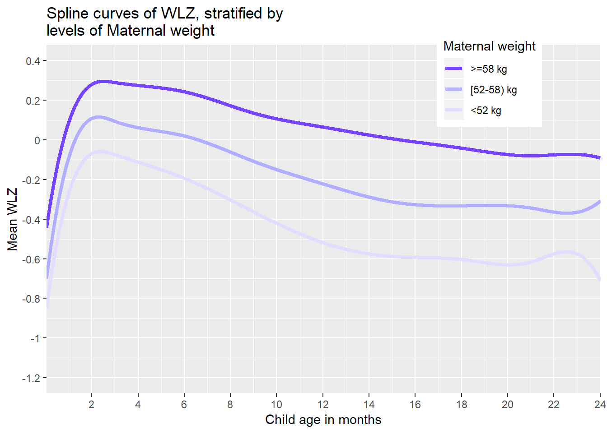
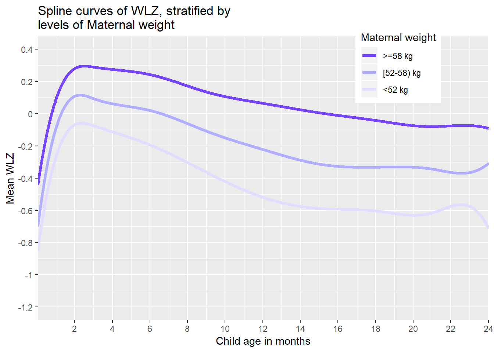
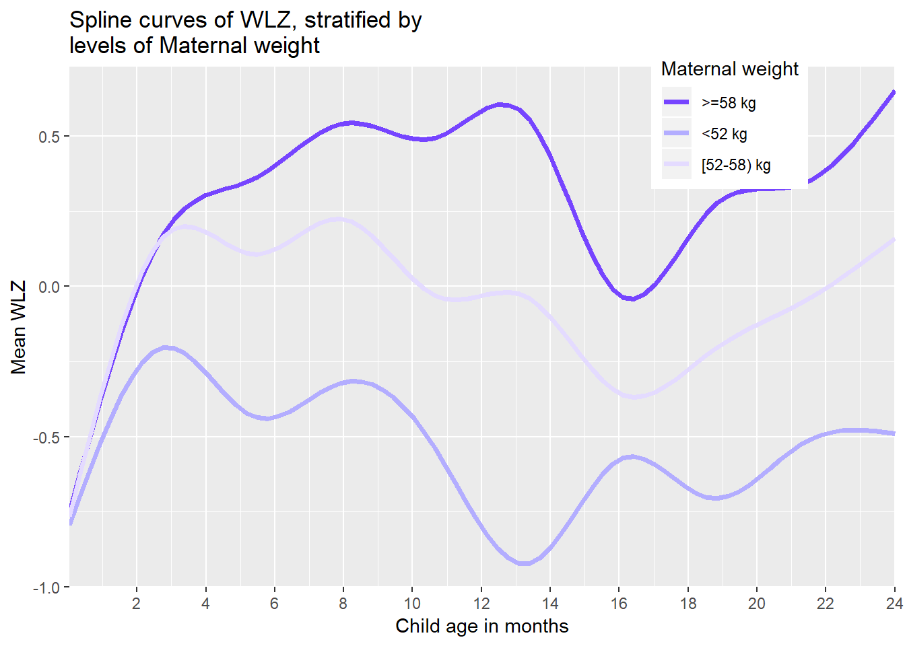


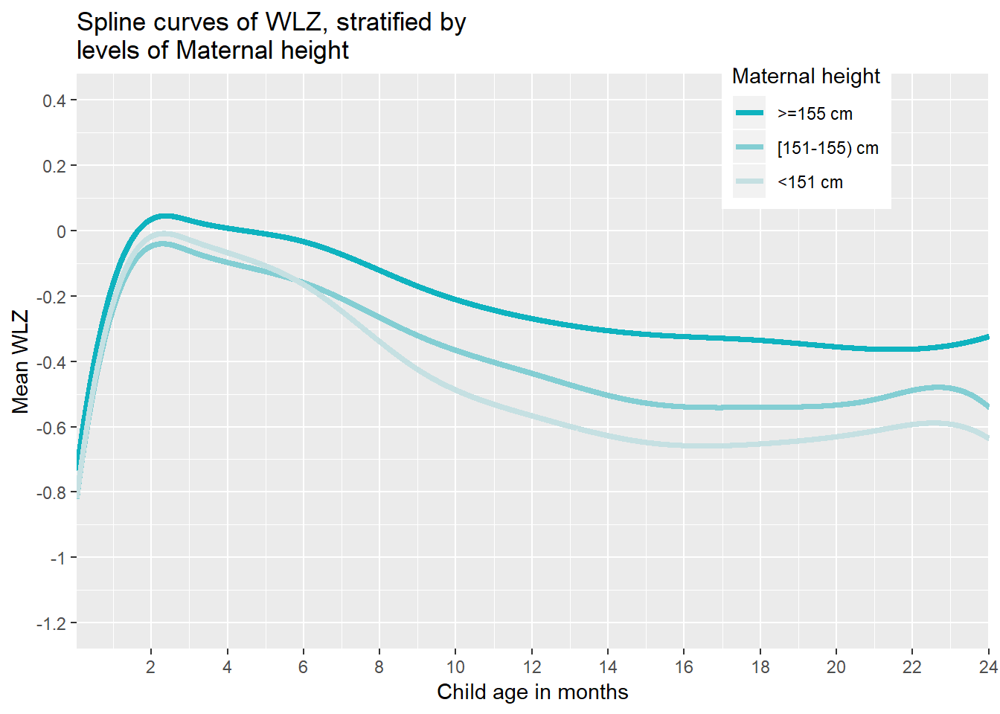


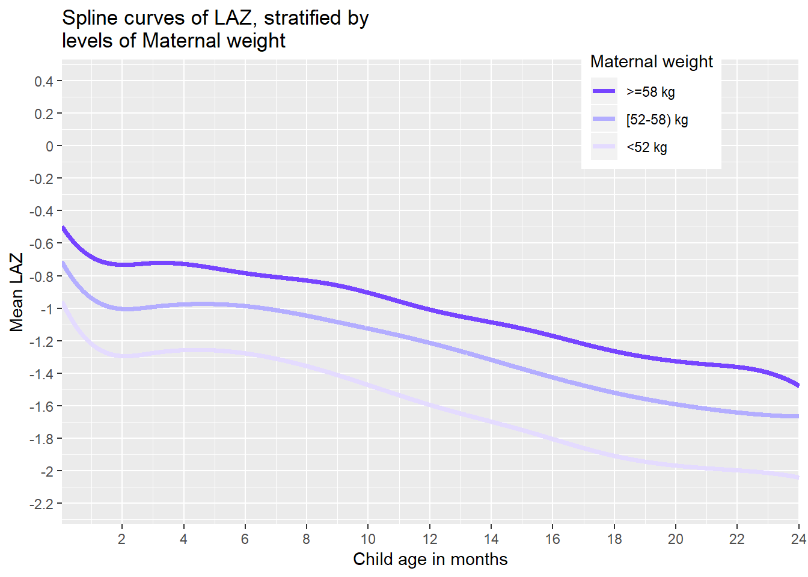
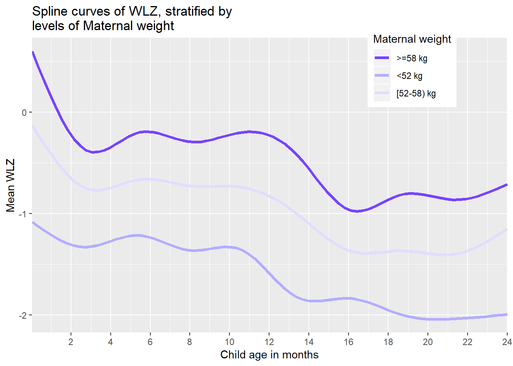
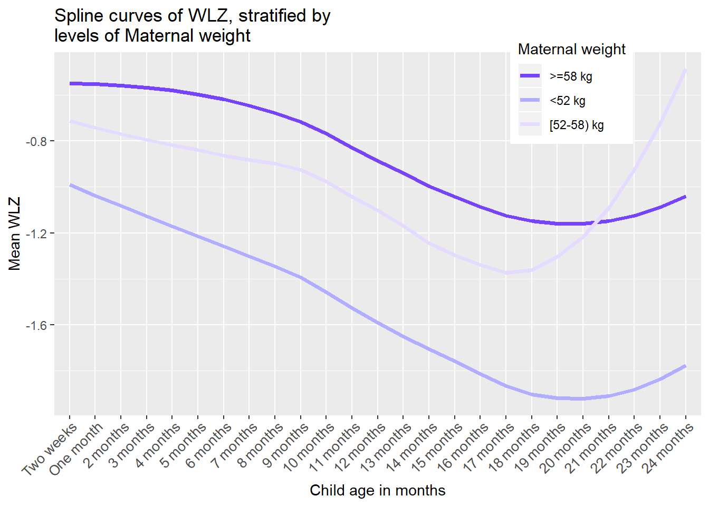

## Warning: Removed 1711 rows containing missing values (geom_path).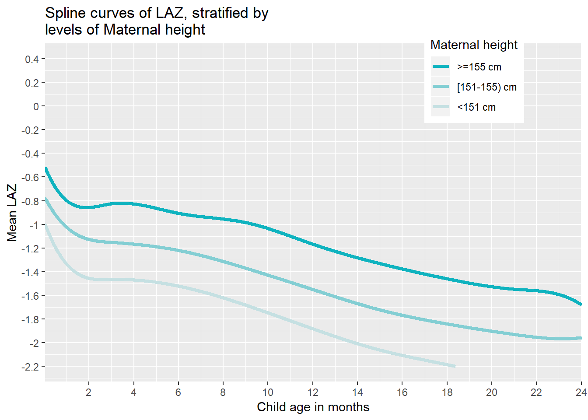

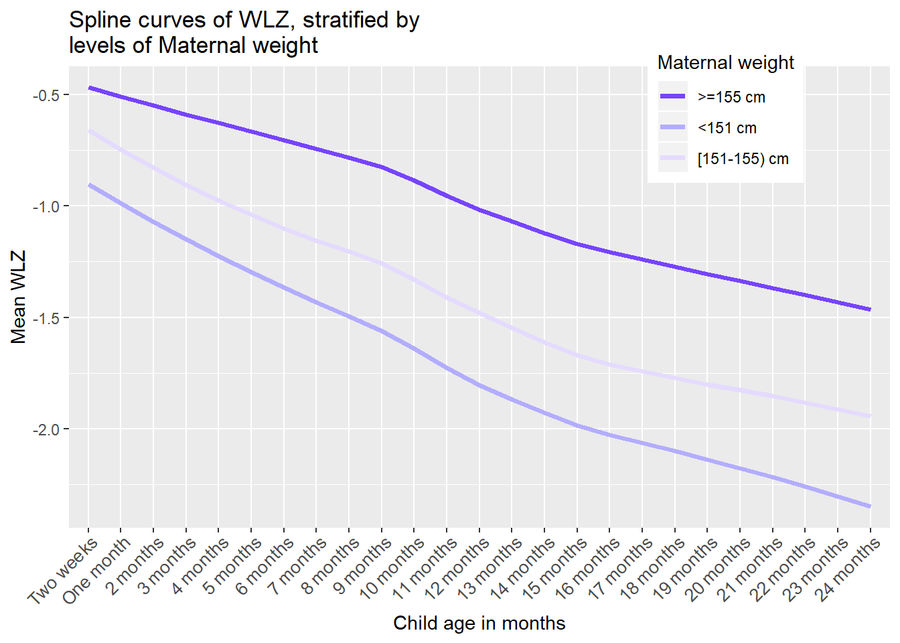
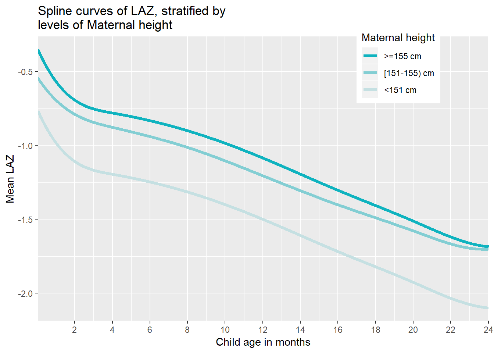
## Warning: Removed 9963 rows containing missing values (geom_path).

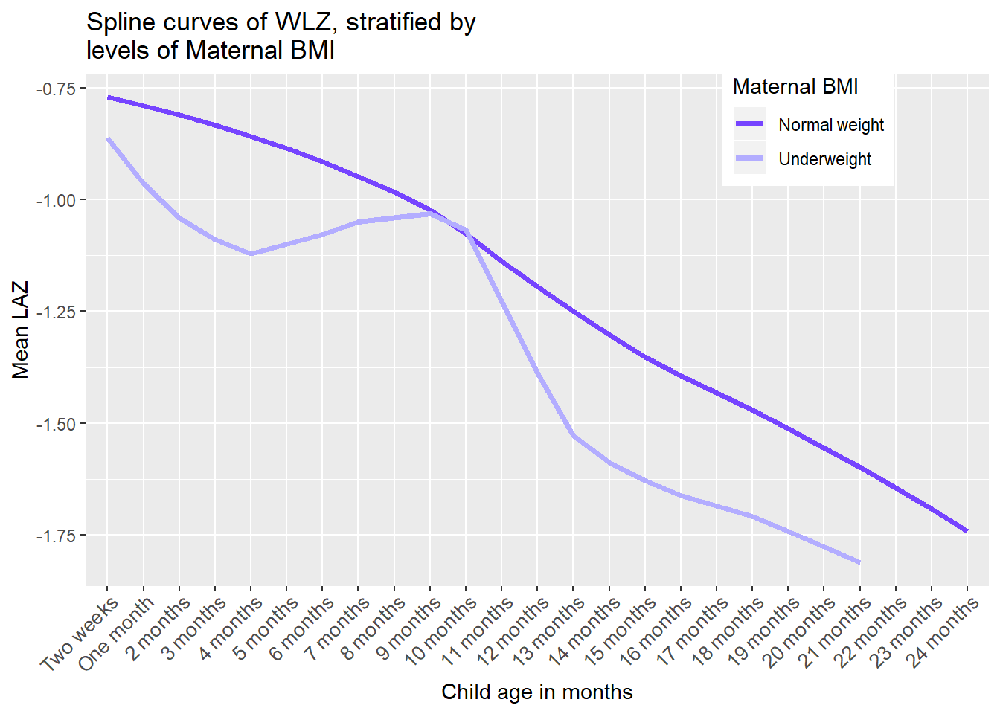

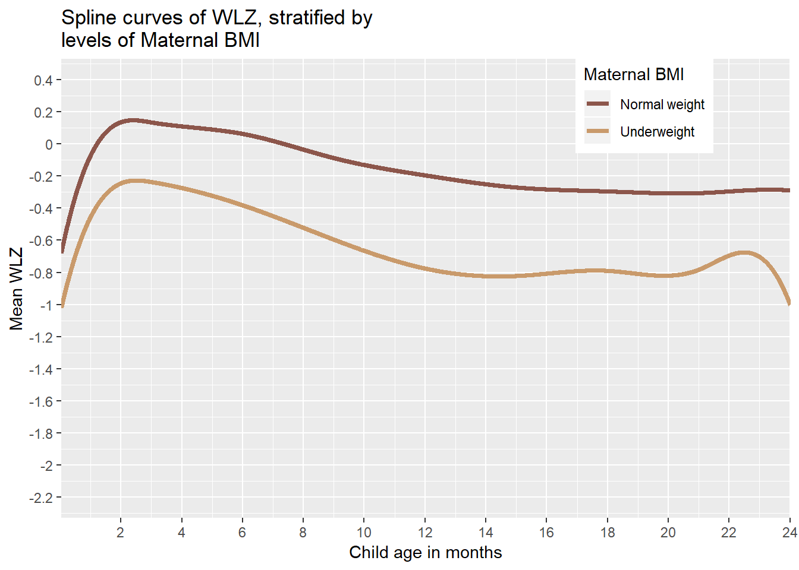
## Warning: Removed 195133 rows containing non-finite values (stat_smooth).